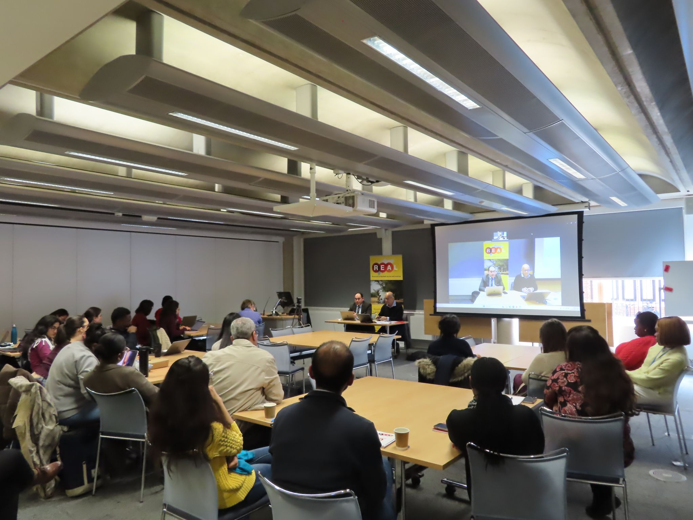
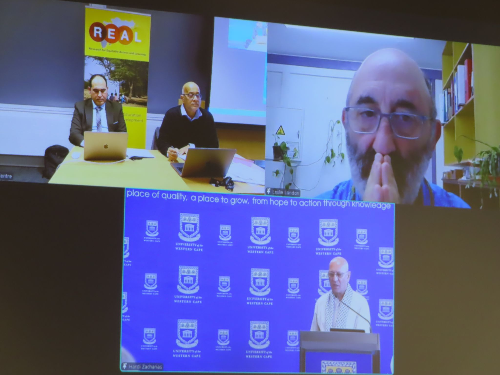

Research & Public Dialogue
Academic Solidarity and Responsibility: Africa and Palestine in Global Perspectives
Dr. Wesam Amer joined leading academics from South Africa and the United Kingdom in an international seminar examining academic freedom, knowledge sovereignty, and scholarly responsibility. Drawing on the Palestinian experience, he contributed to discussions on the role of universities and researchers in defending education, knowledge production, and academic solidarity amid conflict and political crisis.
Scholars from Africa, Palestine, and the United Kingdom convened for the international seminar “Academic Solidarity and Responsibility: Africa and Palestine in Global Perspectives,” a high-level discussion exploring the intersections of academic freedom, knowledge sovereignty, and institutional responsibility in times of crisis. The event formed part of a joint seminar series organised by the REAL Centre at the University of Cambridge and the University of the Western Cape (UWC), South Africa.
The seminar featured Dr. Umesh Bawa, Director of International Relations at UWC, Professor Leslie London of the University of Cape Town, and Dr. Wesam Amer of Gaza University and the University of Cambridge, with Professor Yusuf Sayed serving as discussant.
A central theme of the discussion was the contested concept of academic freedom and its significance as a foundation for democratic participation and the protection of independent knowledge production. Participants examined how universities, scholars, and academic institutions respond to periods of political upheaval, conflict, and social transformation.
During the seminar, Dr. Amer brought Palestinian perspectives into the conversation, discussing the challenges facing higher education and knowledge systems in conflict-affected environments. His contribution highlighted the pressures confronting academics, students, and educational institutions, while emphasizing the importance of international solidarity in protecting educational continuity and scholarly exchange.
The discussion also explored comparative experiences from South Africa and Palestine, examining how academic communities engage with questions of justice, responsibility, and resistance in contexts marked by profound political challenges. Participants reflected on the role of universities not only as centres of teaching and research but also as institutions with broader social and ethical responsibilities.
The seminar concluded the current term's collaborative series between Cambridge and UWC, while organisers announced plans for further events aimed at strengthening global dialogue on academic freedom, educational justice, and international scholarly cooperation. The event reinforced the importance of cross-border academic partnerships in addressing some of the most pressing challenges facing higher education today.


